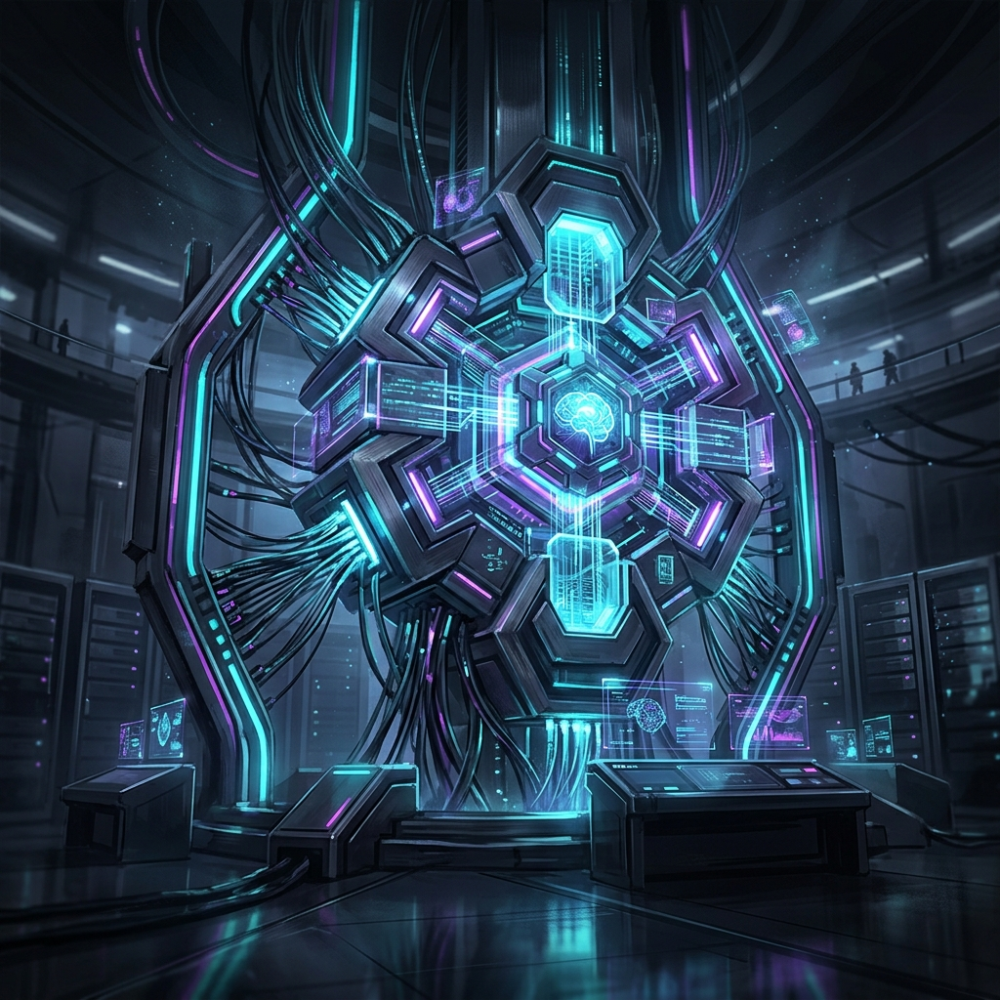

汎用人工知能（AGI）は私たちの知性をどう拡張するのか
次世代AIアーキテクチャの進化がもたらす、社会構造の根本的な変革と人類の新しい役割について考察する。
SCROLL
最先端のテクノロジー動向と未来予測

次世代AIアーキテクチャの進化がもたらす、社会構造の根本的な変革と人類の新しい役割について考察する。
重力制御から閉鎖生態系生命維持システムまで。地球外コロニー実現に向けた最新の技術的ブレイクスルーに迫る。

IoTと量子コンピューティングが統合された未来の都市インフラ。プライバシーと利便性の境界線はどこにあるのか。